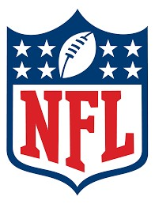

A lo largo de su historia, la National Football League ha evolucionado hasta convertirse en una organización moderna que combina tradición e innovación. Con equipos emblemáticos como los Dallas Cowboys y los New England Patriots, la liga ha sido escenario de dinastías, rivalidades históricas y momentos inolvidables que han marcado la cultura deportiva global.
Además del espectáculo en el campo, la NFL también destaca por su impacto mediático y comercial, generando enormes audiencias a través de transmisiones televisivas y plataformas digitales. Eventos como el NFL Draft y el Pro Bowl mantienen a los aficionados conectados durante todo el año, haciendo de esta liga mucho más que una simple competencia deportiva.
